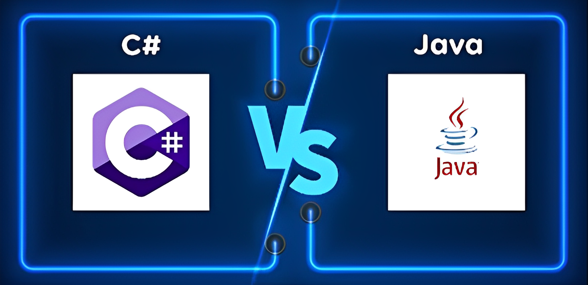
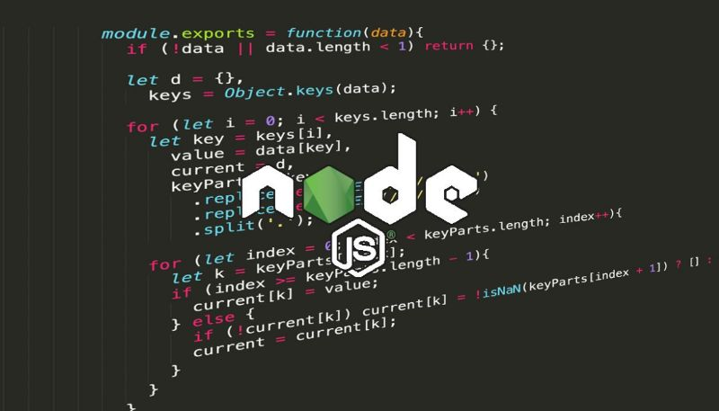

Chương trình học nghành công nghệ thông tin tại
Cao Đẳng FPT
Tổng Quan
Với cuộc cách mạng 4.0, ngành công nghệ thông tin đang ‘bùng nổ’ như vũ bão và chuyên ngành Ứng dụng phần mềm là một trong số đó. Khác với phát triển phần mềm, nhân sự về ứng dụng phần mềm sẽ tập trung vào các công việc thử nghiệm, ứng dụng phần mềm vào hệ thống hạ tầng của doanh nghiệp. Qua đó, giúp doanh nghiệp tìm kiếm được những giải pháp CNTT tối ưu, cải thiện chất lượng hoạt động, quy trình làm việc…
Bạn yêu thích công việc liên quan tới máy tính?
Bạn yêu thích công việc liên quan tới máy tính?
Bạn có khả năng phân tích, suy luận tốt?
Bạn kiên trì, cẩn thận, chịu được áp lực cao trong công việc?
Bạn đam mê và luôn tò mò về những xu hướng công nghệ mới nhất hiện nay?
Nếu trả lời được những câu hỏi trên, chuyên ngành Ứng dụng phần mềm sẽ là sự lựa chọn tuyệt vời dành cho bạn!
Chương trình đào tạo chuyên ngành Ứng dụng phần mềm do Trường Cao đẳng FPT Polytechnic triển khai sẽ tập trung vào việc cung cấp kiến thức, kỹ năng về quản trị cơ sở hạ tầng mạng máy tính; Cài đặt và quản trị các phần mềm hệ thống; Phát triển, SEO và quản trị website; Thiết kế các ấn phẩm cơ bản và hỗ trợ các công việc tin học thường nhật. Người học sẽ trở thành nguồn nhân lực quan trọng, hỗ trợ trực tiếp cho mọi doanh nghiệp ở hầu hết các lĩnh vực, ngành nghề.
Thời gian xét tuyển: Tháng 7/2024
Nội Dung Đào Tạo
- -Kiến thức cơ bản về Công nghệ thông tin, mạng máy tính
- -Quản trị, vận hành hệ quản trị cơ sở dữ liệu
- -Thiết kế các ấn phẩm số với Photoshop và Illustratorg
- -Cài đặt và bảo trì phần cứng, phần mềm
- -Thiết kế, xây dựng và quản trị website dựa trên CMS
- -Kiểm thử cơ bảng
- -Ứng dụng phần mềm miễn phí, triển khai các phần mềm mã nguồn mở
- -Thiết lập và quản trị mạng máy tính, quản trị máy chủ ảog
- -Thiết lập và ứng dụng công nghệ điện toán đám mây
- -An toàn và bảo mật thông tin
- -Kỹ năng phần mềm & tiếng Anh: kỹ năng giao tiếp, thuyết trình, kỹ năng làm việc nhóm, kỹ năng xử lý tình huống phát sinh trong quá trình thực hiện công việc, tiếng Anh giao tiếp
CƠ HỘI NGHỀ NGHIỆP
- -Nhân viên phát triển website với WordPress
- -Nhân viên quản trị và SEO website
- -Nhân viên kiểm thử phần mềm
- -Nhân viên quản trị và bảo trì mạng máy tính
- -Nhân viên quản trị CSDL
- -Nhân viên thiết kế ấn phẩm đồ họa cho doanh nghiệp
Nội Dung Chương Trình và lộ Trình Học

Học Kì 1
Thiết kế và phát triển website chuyên nghiệp
- -Sinh viên sẽ được học kỹ năng thiết kế website bằng công cụ Figma và lập trình web với PHP-Laravel Framework. Từ đó hiểu rõ cách thiết kế 1 website, phát triển website động chạy được trên các màn hình có kích thước khác nhau sử dụng HTML, CSS, JavaScript, jQuery, React kết hợp với PHP-Laravel framework. Ngoài ra, người học còn nắm vững cách chuẩn hóa và lập trình Database cùng quy trình kiểm thử phần mềm.
Học Kì 2
Lập trình hướng đối tượng với ngôn ngữ JAVA SE, C#
- -Sinh viên được học chuyên sâu về công nghệ JAVA SE và JavaFX để phát triển các ứng dụng có thể chạy được trên nhiều thiết bị khác nhau, lập trình hướng đối tượng bằng ngôn ngữ C#. Đi sâu vào lập trình hướng đối tượng (OOP), lập trình hàm, lập trình với database, Swing và JavaFX để tạo ứng dụng desktop.


Học Kì 3
Chuyên sâu về công nghệ .NET, NodeJS & phân tích dữ liệu với Python
- -Sinh viên được học về dữ liệu lớn (MongoDB) và phân tích dữ liệu với ngôn ngữ lập trình Python, đi sâu vào lập trình website với NodeJS, ASP.NET, Web API, Azure Cloud. Kết hợp với kiến thức Front-end ở Học kỳ 1, sinh viên có thể xây dựng website chuyên nghiệp với quy mô lớn.
Học Kì 4
Chuyên sâu về công nghệ JAVA EE & Lập trình di động
- -Sinh viên được cách thiết kế, phát triển và triển khai các web/enterprise application một cách thuần thục bằng công nghệ JAVA EE, lập trình thành thạo ứng dụng trên nhiều nền tảng di động (Android, iOS,…). Từ đó các bạn có thể triển khai các dự án có quy mô lớn, đa nền tảng.